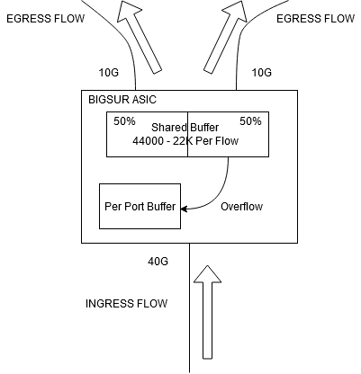

QoS VOQ
On N5K, In the case of unicast traffic, VOQ is an ingress buffer pool for 3 ingress port (1 ASIC). This buffer pool is split into n x reservable buffer of the size configured in the voq-limit command.If the ingress buffer is 16000 and the VOQ limit is 1024, that mean 16 flow can reserv buffers.When the shared buffer is exausted, the dedicated ingress buffer per port is used then when it’s full, the packet is droped.
VOQ is reservable per egress port per class (pair).With small VOQ limit, there is lot of buffer available for non congested flow. With no VOQ limit, a congested port can use up to 50% of the total shared memory and those, 2 congested port can exaust all the ingress resources of an ASIC (3 ingress port) and drop can happen on this ASIC
https://www.ciscolive.com/c/dam/r/ciscolive/us/docs/2015/pdf/BRKDCT-3100.pdf
https://www.ciscolive.com/c/dam/r/ciscolive/us/docs/2017/pdf/BRKDCN-3346.pdf
https://www.cisco.com/c/en/us/support/docs/switches/nexus-6000-series-switches/200401-Nexus-5600-6000-Understanding-and-Troub.html
In case of a Nexus 5600. 1 ASIC = 3 * 40Gb or 12*10G ports. Cells are the units in which buffers are allocated. One cell is 320 Bytes. ASIC Ingress buffer size : 48840 of available total cells (16M), shared among all 3x40Gb ports. Egress buffer is 9Mb (dedicated buffer per ASIC).
VOQ. ingress per output port/class queues. E.g with 114 ports on the switch with 8 queues there would be 1152 VOQs.On N5600 Buffer can be shared accrod port and classes, giving more burst absorption capacity.
Default buffer allocation
- minimum fixed buffer of 312 cells (100KB) is reserved per class (up to 8 classes) per ingress port, rest of the buffer is shared. This is done to guarantee minimum performance.
If there is only 1 class (the class-default for instance), there is only a single fixed/dedicated buffer per port.
- 44,331 cells of shared buffer available for data traffic for all ports. shared buffer is used first.
- any drop class can access half of the shared buffer- no-drop class (eg fcoe) can access complete shared buffer.
- “queue-limit” under “network-qos” policy specifies the dedicated buffer for each port and each class. The dedicated buffer can be used by the port for only that class of service.
voq-limit
Command “hardware unicast voq-limit [threshold …]”
enabling voq-limit turns on a shared buffer threshold per each voq.
limits the amount of buffers usable on the ingress interface, for packets headed towards a specific VoQ (“egress port, class” pair). Drops happens per VOQ, when its packet in ingress buffer exceed threshold: when the traffic ingress on a port and it consumes all 1024 cells, it will get dropped as discards.
when the second flow traffic comes in, it will tage another 1024 cells as well but in a different VOQ and will not get dropped; this way voq thresholding prevents the non-congested egress port traffic drop.
HOLD mitigation and VOQ thresholding
Below is discussed for scenario without voq-limit enabledCongestion on one egress port in one CoS eventually bleeds into the congestion of its corresponding VOQ on the ingress port. Once the limit is reached then traffic gets dropped.
On N5600 ASIC Buffers are allocated per ingress port and are shared by all the egress ports that are seeing traffic from this ingressport.
A stuck or slow-draining egress port can causse all buffers on one or more ingress ports that are senfing traffic to the egress port to be exhausted, thereby affecting all traffic on these ingress port. This is Head of Line Blocking (HOLB) problem.
To avoid this scenario, the VOQ for unicast traffic may be configured with a voq-limit threshold, at which point the port will stop accepting any more packets for congested destination (drops the packets or pauses the affected class for non-drop class type). When the queue length decrease and goes below another threshold, the VOQ starts accepting packets again.
By default VOQ Thresholding is disabled for all classes.
Questions
- About the limit of 8000 cells, why not setting directly 16000 or removeing the limitation ?
Setting larger voq-limit increases the change to improve burst absorption but also leaves non-congested VOQs to be more likely affected by congested VOQs (as the latter can dip more into shared buffer).Disadvantage of having a voq-limit is that when we have a burst traffic comming in (like for distributed storage/VSAN), it connot use more than configured threshold of allocated cells and the bursty flow will have drops even though there is un-used ingress buffer.It’s recommanded to remove voq-limit in case of bursty traffic.
- Are the VoQ per UPC or per ingress interface ?
VOQs are per class per egress interface. E.g. With 114 ports on the switch with 8 queues there would be 1152 VOQs per port.If there is only 1 class (class-defauklt), the number of VOQ is matching the number of egress ports.
- Our undestanding is that if we remove the command voq limit, we might have HOLB while with the command it’s not possible. Could you explain how is this possible to have HOLD if VoQ is always used ?
This can happen because VOQ Thresholding (voq-limit) is not enabled by default. Therefore, each VOQ can borrow from shared buffer and some of non-congested VOQs would not be able to handle traffic due to lack of buffer space, even though they are not congested.
Effect of changing or removing VOQ-limit on the traffic.
There would be subsecond traffic interruption on all ports.Effect of changing or removing VOQ-Limit on the FEX.
There should not be any effect on the FEX operationCould you describe the difference in the behavior of buffers (shared, ingress dedicated per port, voq per cos, drop) with the command voq limit default, with the command voq limit configured with the max value, and without the voq limit command ?
A. Without voq-limitShared - used by all ingress ports by default. 3*40G (or) 12*10G ports compete for usage, when per-port buffers are exhausted.Dedicated - samll, reserved per port per class. Can be adjusted with queue-limit command.VOQ drop thresholds are disabled.Shared is used first, only then overflow to dedicated.One drop class per ASIC can take up to half if the shared buffer.If congestion is constant, it can result in blocking for other VOQs in the same ingress port.Slow draining port can affect others by consuming shared and dedicated buffers.ExempleUnicast traffic coming on a 40G ingress port and egress port are 2x10G. When one of the egress port 10G is congested, it moght be possible that a new ingress flow from this 40G interface to another 10G interface can get affected as well because of non-availability of the ingress buffer.

When the traffic ingress on a port it first fills the shared buffer. Each flow can take up ti 50% of the total shared buffer available (22200 cells or ~7.1MB). After filling 50% of the buffer the same flow will utilize the per-port fixed buffer.When the new flow comes ingress on that port, it tries to fill in the 50% of shared buffer but if shared and per-port buffer are already filled, this traffic would be dropped.We can avoir the new flow, that is goignt o different no-congested port, from getting dropped by enabling VOQ thresholding.
B. With voq-limit default value 1024Drop happend per VOQ, each limited by 1024 cells.Congestion in one VOQ has minimal chances to affect other VOQsVOQ drop thresholds are minimal, so burst traffic flow coming in it cannot use more than 1024 allocated cells and will have drops even though there is un-used buffer.when the traffic ingress on a port consumes all 1024 cells, it will get dropped as discards.When the second flow traffic with destination to another egress port comes in, it may consume 1024 cells as well but a different VOQ- so will not get dropped.
C. with voq-limit default value 16384drop happens per VOQ, each limited by 16384 cells.congestion in one VOQ does not affect other VOQs if there is enough shared buffer left.VOQ drop thresholds are at maximum.Burst traffic flow coming can use up to 16384 allocated cells and will have drop everything above it. Other VOQs buffering at the same instance can use remaining buffer (but nor more than 16384each). In theory, 3 VOQs, that are fully congested at the same time, could take all the buffer. It is very difficult to prefict instant buffer usage due to unpredictable nature of bursty flows, so exact values should be taken from production, e.g. Try with 16384 and reduce the threshold if negative impact is seen on non-congested flows.
Couple of solutions to resolve bursty trafic drop:
- Remove VOQ limit completel (heavy burst trafic)
- Increase VOQ Threshold to 8000 or 16384 (max) and monitor the situation with discards=> show hardware profile buffer monitor interface ethernet
- Spread congested links betweek different ASICs.
- Implement policing of the traffic.